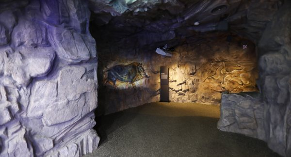
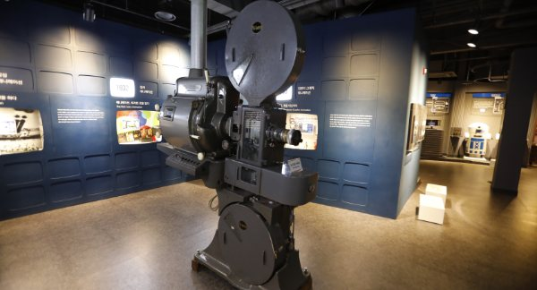
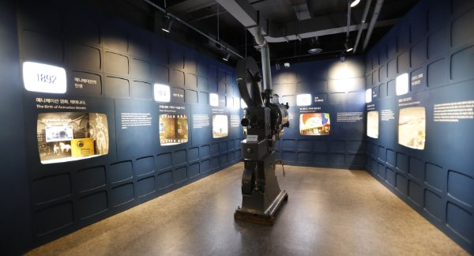
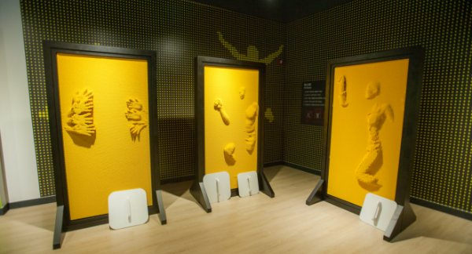
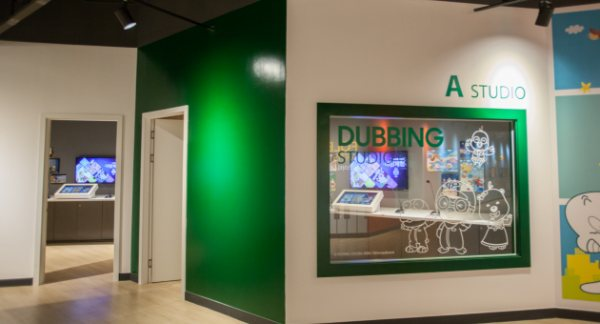
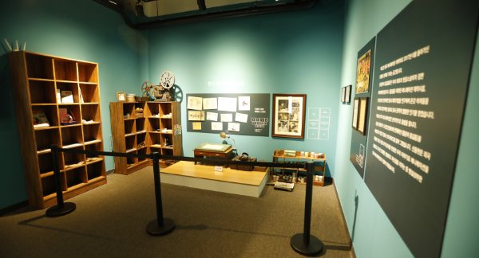
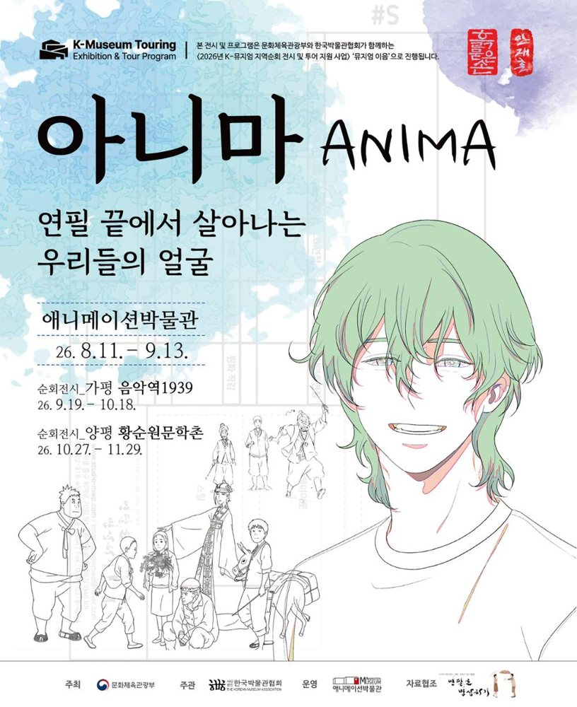

오늘
문 열어요
10:00–18:00 · 입장 마감 17:00
관람에 1시간 30분~2시간 걸려요. 오후 4시 전에 들어오시면 여유로워요.
오늘 문 열어요10:00–18:00 · 입장 마감 17:00
눌러 보세요영사기는 옆으로 밀면 돌아가요
애니메이션은 무슨 뜻일까요?
멈춰 있는 그림에 숨이 들어가면 애니메이션이 됩니다. 기원전 1만 년 알타미라 동굴벽화부터 1890년대 유리필름, 오늘의 웹 애니메이션까지 — 그 숨의 역사를 우리나라에서 유일하게 한곳에 모았습니다.
관람 안내
오늘
문 열어요
10:00–18:00 · 입장 마감 17:00
관람에 1시간 30분~2시간 걸려요. 오후 4시 전에 들어오시면 여유로워요.
관람권 애니메이션박물관 + 토이로봇관 · 전 연령 동일
단체와 춘천시민은 현장 발권만 돼요.
쉬는 날
매주 월요일
1월 1일 · 설·추석 당일
월요일이 공휴일이면 다음 날 쉬어요
무료 · 할인
온라인 예매
당일 오후 3시까지
예매 1시간 뒤부터 쓸 수 있어요
전시 둘러보기

1층 · 01
애니메이션은 무슨 뜻일까요? 기원전 1만 년 알타미라 동굴에서 그 뜻과 원리를 알아봐요.

1층 · 02
환등기에서 시작된 영사기의 발달 과정과 1890년대 유리필름을 만나요.

1층 · 03
애니메이션의 종류와 한국 애니메이션의 역사를 영상과 자료로 살펴봐요.

2층 · 04
몸으로 느끼는 핀스크린, 주인공 체험, 캐릭터 변검 체험.

2층 · 05
소리를 만드는 폴리아티스트가 되어 보고, 내 목소리로 더빙해요.

2층 · 06
한국 애니메이션의 산 역사, 故 신동헌 감독을 기억하는 공간.
이 밖에 상상의 계단 · 세계관 · 기획전시실 · 뮤지엄샵 · 구름빵 카페 · 야외 캐릭터공원이 있어요.
지금 열리는 것

기획전 · 순회 중
오시는 길
강원특별자치도 춘천시 서면 박사로 854
033-245-6470토이로봇관 033-245-6460